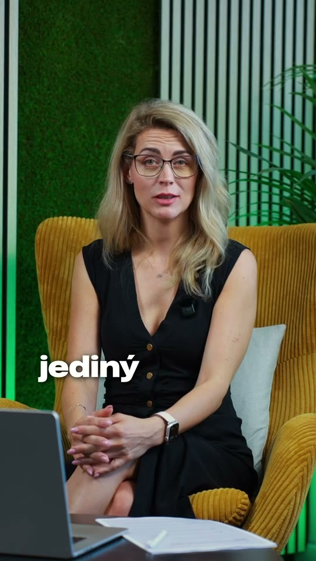

Pochop, jak to vidí druhá strana
Co personalista opravdu čte v CV, na co se ptá na pohovoru a proč firmy nereagují. Žádné domněnky, ale pohled někoho, kdo nabírá každý den.
Jinde Edu · vzdělávací platforma zdarma
Jinde je vzdělávací platforma pro lepší život v práci. Ať už chceš růst tam, kde jsi, nebo se připravit na novou kariéru na místě, které tě bude bavit. Krátká videa z praxe HR, konkrétní kroky a žádná nudná teorie.
Není to tak složité
Většina lidí hledá práci naslepo a pak se diví, že je nebaví. My to otáčíme: nejdřív pochopíš, jak to funguje na druhé straně, a teprve potom jednáš.
Co personalista opravdu čte v CV, na co se ptá na pohovoru a proč firmy nereagují. Žádné domněnky, ale pohled někoho, kdo nabírá každý den.
Každé video končí tím, co uděláš ještě dnes. Checklisty a PDF k stažení, žádné „zamysli se nad svou motivací".
Za dokončený obsah sbíráš body a postupuješ úrovněmi. Vidíš, co máš za sebou a co ti ještě chybí k práci, která ti sedne.
Ukázky z Edu
Krátká videa na výšku, natočená pro mobil. Jedno téma, jeden příběh z praxe, jeden konkrétní závěr. Klepni a pusť si je se zvukem.
Deset let v call centru není nula. Jak přeložit zkušenosti z jiného oboru do řeči, které HR rozumí, místo srovnávání jablek s hruškami.
Zdarma v EduPetra reaguje jen na inzeráty a netuší, že každý obor má komunity, kde se lidé pravidelně potkávají. Kde firmy opravdu hledají a jak se tam dostat.
Zdarma v EduDatum 1996 v úvodu životopisu je pro HR signál dřív, než se dostane k tomu podstatnému. Jak CV poskládat, aby mluvilo o tom, co umíš, ne kolik ti je.
Zdarma v EduNabídka z jiné firmy, tři dny na rozhodnutí a nulová představa, kolik berou ostatní. Jak si zjistit své číslo dřív, než se tě na něj někdo zeptá.
Zdarma v EduJak Edu funguje
Student, změna oboru, návrat po pauze nebo hledání práce po padesátce: každý potřebuje něco jiného. Proto si na začátku vybereš svou situaci.
Osnova se poskládá podle toho, kde právě jsi. Vidíš přesně, co tě čeká a co už máš hotové.
Tři až pět minut, jedna myšlenka. K většině témat i checklist nebo PDF, které si rovnou použiješ.
Jedna otázka po každém videu. Správná odpověď = body a postup na další úroveň. Malé vítězství, které tě drží v tempu.
Pro koho to je
Vyber si, kde právě jsi. Vpravo uvidíš, co ti Edu nabídne:
Vybrané pro situaci Student. Každý měsíc přibývají další.

12 let na straně, která rozhoduje„Za dvanáct let jsem viděla tisíce životopisů skončit v koši za sedm sekund. Tady ti řeknu proč. A jak to příště nebude ten tvůj."
Kariérní expertka
Jina Malecová vybírá kandidáty na druhé straně stolu už dvanáct let, od dělnických pozic přes THP až po vysoký management a specializované IT role. V Edu ti říká to, co ti personalista na pohovoru nahlas nepoví.
Co HR skutečně čte v CV, co testuje na pohovoru a proč firmy nereagují. Žádné domněnky, jen zkušenost z každodenního náboru.
Každé video končí tím, co uděláš ještě dnes. K většině témat checklist nebo PDF, které si rovnou použiješ.
Pod každou lekcí můžeš napsat, co tě zajímá. Vybrané otázky Jina rozebírá v dalších videích a na živých webinářích Jinde Edu.
Pro firmy
Staňte se partnerem Jinde Edu a spojte svou značku s lidmi v momentě, kdy na sobě aktivně pracují. Dřív, než začnou hledat práci jinde.
Časté otázky
Vyber si svou situaci, pusť si první video a udělej první krok k práci, která tě bude bavit.
Vstoupit do Edu zdarmaZdarma•Videa 3 až 5 minut•Odhlásit se můžeš kdykoli